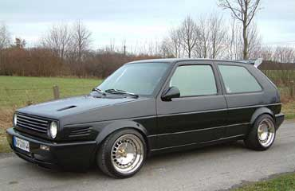
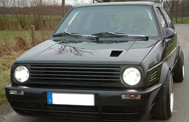
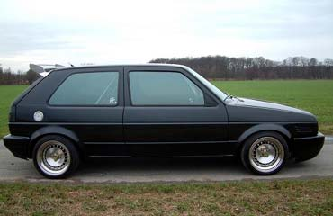
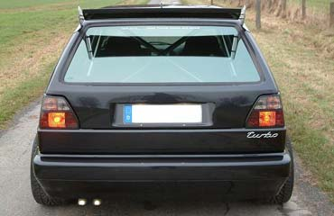
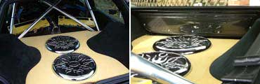
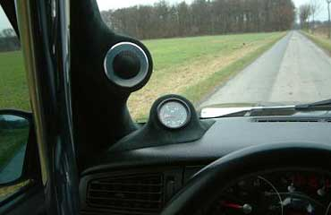
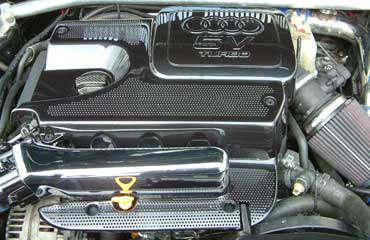

Motor
- 1,8 Turbo aus Audi TT
- 5 Gang TT Getriebe und Seilzugschaltung
- Großer Ladeluftkühler vom Rallye Golf
Abgasanlage
- Bastuck komplett mit polierten Diesel Endrohren
Bremse
- G60 mit Sandtler Scheiben gelocht, geschlitzt und thermisch behandelt
- Ferodo DS3000 Rennsportbelege
Felgen / Reifen
- Schmidt TH Line, VA 8 x 15 ET 8, HA 9,5 x 15 ET6
- Dunlop SP Sport 9000 in 195 / 45 - 15 und 245 / 35 - 15
- Verchromte Radbolzen
- Felgen komplett hochglanzpoliert mit vergoldeten Schrauben
Fahrwerk
- KW Gewinde Variante 2
Sonstige Umbauten
Außen
- Sämtliche Plastik Scheiße entfernt
- Dietrich GT Look Stossstange vorn
- Hintere Stossstange komplett clean
- Kotflügel gezogen
- Seitenblinker entfernt
- Gecleante Heckklappe und Türen ohne Griffe
- Eingeschweisste Lufthutze in der Motorhaube
- Sprinter Luftschlitze
- Eingeschweißter DTM Tankdeckel
- Klarglassscheinwerfer mit Audi A8 Bi Xenon Linsen
- Schwarze Klarglassrückleuchten
- Tropfenspiegel
- Verchromte Wischerarme
- Heckscheibe ohne Heizdrähte
- Chromolux Folie
Innen
- Vollschalensitze mit automatischen Schroth Gurte
- Golf 3 Cockpit mit geändertem Audi TT Tacho mit FIS
- Radio und Monitor im A-Brett eingespachtelt
- Wiechers Käfig Sonderangefertigt, Alu Poliert
- Türpappen und div. Plastikteile in Leder
- A-, B-, C-Säulen, Heckausbau und div. Kleinteile mit Alcantara
bezogen
- Momo Millenium Lenkrad mit gefräster Alu Lenkradnabe
- Elektronisches Gaspedal
- Audi TT Alu Pedale
- Alu Fussmatten
- Handbremshebel, Türöffner und diverse Kleinteile in Chrom
Motorraum
- div. verchromte, lackierte oder mit Kohlefaser laminierte Teile
Hifi
- ges. RMS Leistung 2,12 kW
- Pioneer DEH 9400
- Alpine 7 Zoll Monitor im A-Brett
- Audio System Twister F6
- 2 x Audio System Twister F4 540
- RS Audio Hochtöner in die A-Säule gespachtelt
- Türpaneele mit je 2 x Phonocar 2 / 737 Kickbässen
- 2 x 38er Audiobahn Woofer im Heck
Kontakt
andy@vwclubms.de
Andy´s
Erfolge
6. Platz Ascheberg Beschleunigungsrennen 2002
3. Platz Golf II - Klasse Osterholz-Schambeck 2003
3. Platz Golf II - Klasse "Alles VW" Osnabrück 2003
2. Platz Golf II - Klasse Marl / Recklinghausen 2003
2. Platz Golf II - Klasse Hamm 2003
3. Platz Golf II - Klasse Delmenhorst 2003